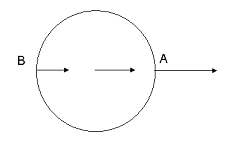
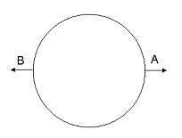
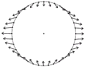
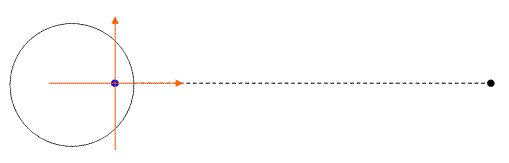
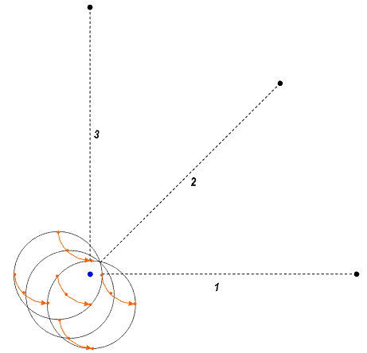
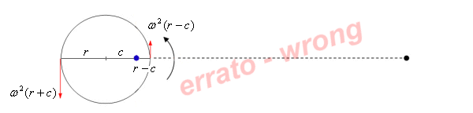

<html><head>
<meta http-equiv="Content-Type" content="text/html; charset=windows-1252"><title>Tides and centrifugal force</title>

<style type="text/css">
<!--
body {
	margin-left: 35px;
	margin-top: 10px;
	margin-right: 35px;
	margin-bottom: 10px;
	font-family: Verdana, Arial, Helvetica, sans-serif;
	font-size: 12px;
	line-height: 12pt;
}
.Stile10 {font-size: x-small}
.Stile12 {font-size: x-small; font-style: italic; }
td {
	font-family: Verdana, Arial, Helvetica, sans-serif;
	font-size: 12px;
}
-->
</style></head>
<body lang="IT">

<h3>Case 1: the free fall</h3>

<p>We face now the problem of explaining tides in the simplest way: as
the Earth was in free fall towards the Moon. Let's imagine stopping the
motion at the instant where the distance between Earth and Moon
centres is <i>R</i>. To study this situation we choose the RF at
the Earth's center. Since it's a non-inertial RF, because it is
  accelerated by the Moon's gravity, we shall consider a fictitious
acceleration equal and opposite:</p>
<table align="center" border="0" width="550">
  <tbody><tr>
    <td><div align="center"><sub> </sub> m/s²</div></td>
    <td><div align="right">(6)</div></td>
  </tr>
</tbody></table>

<p>pointing in the direction opposite to the Moon.</p>
<p>&nbsp;</p>

<p><b>Kinematics</b></p>

<p>From a kinematic point of view, in this reference system, stopped at
the moment in which the distance between the Earth and the Moon is <em>R</em>, all the points of the Earth's surface are stationary, the Moon runs [falls] towards the Earth.</p>
<p>&nbsp;</p>

<p><b>Dynamics</b> </p>

<p>We calculate the total acceleration of A and  B, recalling the equation (3) as the sum of:  <br>
  - Moon's gravitational acceleration<br>
  - fictitious acceleration<br>
The result will be equated to the kinematic acceleration of that
point, considered belonging to the Earth's surface, plus a component,
called &#916;, that actually represents the tidal force, the force that tends to deform the Earth's surface. <br>
</p>
<p>Paying attention to vectors' direction, for A we can write:</p>
<table align="center" border="0" width="550">
  <tbody><tr>
    <td><div align="center"> 
        <p>  </p>
        <p>  </p>
    </div></td>
    <td><p align="right">(7)</p>      <p>&nbsp;</p></td>
  </tr>
</tbody></table>
<p>And for B we can write:</p>
<table align="center" border="0" width="550">
  <tbody><tr>
    <td><div align="center"> 
        <p>  </p>
        <p>  </p>
    </div></td>
    <td><p align="right">(8)</p>      <p>&nbsp;</p></td>
  </tr>
</tbody></table>
<p>The order of magnitude is <sub></sub>:&nbsp;one ten-millionth of the gravity acceleration.</p>
<table align="center" border="0" cellspacing="10" width="80%">
  <tbody><tr>
    <td valign="top"><div align="center">&nbsp;         </div></td>
    <td valign="top"><p align="center"></p></td>
    <td valign="middle"><p align="center">&nbsp;         </p></td>
  </tr>
    <tr>
      <td valign="top"><div class="Stile10" align="center"><em>Fig. 3 </em></div></td>
      <td valign="top"><div class="Stile10" align="center"><em>Fig. 4 </em></div></td>
      <td valign="top"><div class="Stile10" align="center"><em>Fig. 5 </em></div></td>
    </tr>
  <tr>
    <td valign="top"><span class="Stile12">The gravitational acceleration due to the Moon for three points of the Earth. </span></td>
    <td valign="top"><span class="Stile12">After
having removed the fictitious acceleration of that particular RF, we
see emerging forces that want to deformate the planet along the
Earth-Moon line. </span></td>
    <td valign="top"><span class="Stile12">By doing the calculation for all the points of the Earth's surface, emerges the well-known tidal force field.</span></td>
  </tr>
</tbody></table>
<p>We have then demonstrated the existence of two tidal bulges, in
opposite directions and slightly different intensity, being stronger
the one towards the Moon. It's all we need to explain tides: the tidal
effect is only due to the gravity gradient.</p>

<p>We emphasize that tidal bulges are not due to the shrinking
of water masses. As we can see in figure 5, in some points of the
Earth's surface, the tidal forces are tangent to a sphere; that implies a force
displacing the water towards the sublunar or anti-lunar points, where
it collects.</p>

<p>The fact that Earth and Moon are orbiting one around the other
implies a centripetal (or centrifugal, it depends upon the RF)
acceleration. It is interesting to show that <em>this force plays no role in the formation of tides</em>, as we will show in the following cases.</p>
<p>&nbsp;</p>

<h3>Case 2: the inertial reference system</h3>

<p>In this second example and in the following ones, we will suppose that Earth and Moon are in circular orbits around each other. </p>

<p>We choose the RF at the center of mass of the Earth-Moon system.
This point is at rest with respect to the Universe. This RS
does not rotate, therefore, in our analysis, we will not have fictitious
forces.</p>

<p style="text-align: center; font-family: Verdana,Arial,Helvetica,sans-serif; font-size: x-small;" align="center"><br>
  <em>Fig. 6
</em></p>
<p style="text-align: center; font-family: Verdana,Arial,Helvetica,sans-serif; font-size: x-small;" align="center">
  <object classid="clsid:D27CDB6E-AE6D-11cf-96B8-444553540000" codebase="http://download.macromedia.com/pub/shockwave/cabs/flash/swflash.cab#version=6,0,29,0" height="350" width="700">
    <param name="movie" value="../images/SR1.swf">
    <param name="quality" value="high">
    <embed src="plotSeismograms_files/SR1.swf" quality="high" pluginspage="http://www.macromedia.com/go/getflashplayer" type="application/x-shockwave-flash" height="350" width="700">
  </object>
</p>
<blockquote>
  <p><em>Fig. 7 - Left: the situation seen from an inertial RF. The RF chosen is marked with orange arrows. <br>
Right, the visual demonstration that every point of the Earth moves in
the same way, by describing circular paths all of the same radius as the motion of
the Earth's center around the CM.</em></p>
</blockquote>
<p>&nbsp;</p>
<p><b>Kinematics</b></p>

<p>The Earth's center describes a circular orbit of radius <em>c</em> around the CM with angular velocity <em>&#969;</em>.</p>

<p>Thinking about the points of the Earth's surface, we have to avoid a common misunderstanding. </p>
<p>Saying that the Earth's center rotates around the CM, does not imply
that the Earth as a whole is rotating around that point! We cannot
forget that, according to our model, the Earth's orientation is fixed
with respect to fixed stars. It is not rotating, it is <em>translating</em>. All its points describe circular paths of equal radius <em>c</em>, but having different centers. Now you have the answer to the question of figure 1. </p>

<p style="text-align: center; font-family: Verdana,Arial,Helvetica,sans-serif; font-size: x-small;" align="center"><br>
  <em>Fig. 8</em></p>
<p>&nbsp;</p>

<p>The Earth moves around the CM holding its orientation relative to the fixed stars.
Thus, there is no single fictitious force (centrifugal)
associated to the motion of the Earth around the CM.</p>
<blockquote>
  <p>So, the following calculation is plain wrong. Some
authors want to calculate the effect of the centrifugal force operating
as follows: if it's true that the Earth rotates around the CM, then the
centrifugal acceleration for the point A is <sub> </sub>m/s² and for the point B is <sub>  </sub>m/s².</p>
  <p align="center"></p>
  <p align="center"><em>Fig. 9 </em></p>

  <p>We would get the nonsensical consequence that the centrifugal acceleration
in B is about 6,5 times the one for A. Probably this is the fact that
deceives those who claim that the tidal bulge opposite to the Moon is created
by the centrifugal force!</p>

  <p>Besides, this calculation gives a tidal acceleration whose magnitude is about 70 
times the real one, so we are really on a slippery slope.</p>
</blockquote>

<p>However, it is correct to say that all the points of the Earth describe a circle whose radius is <em>c</em> and thus undergo an acceleration <sub></sub>&nbsp;m/s² pointing towards the circle's center, i.e. towards the Moon.</p>
<p>&nbsp;</p>

<p><b>Dynamics</b></p>

Since the RF chosen is inertial, we will not take in account fictitious forces. The only force is real, the gravitational one. 
<p>For A we can write: </p>
<table align="center" border="0" width="550">
  <tbody><tr>
    <td><div align="center">
        <p>  </p>
        <p> </p>
    </div></td>
    <td><p align="right">(9)</p>      <p>&nbsp;</p></td>
  </tr>
</tbody></table>

<p>The tidal force is then directed towards the Moon, as in the previous case.</p>

<p>For B we can write: </p>
<table align="center" border="0" width="550">
  <tbody><tr>
    <td><div align="center">
        <p>   </p>
        <p> </p>
    </div></td>
    <td><p align="right">(10)</p>      <p>&nbsp;</p></td>
  </tr>
</tbody></table>

<p>In this case the tidal force on the Earth is opposite to the Moon.</p>

<p>Let's get back to the quantity <sub></sub>. We can rewrite it, taking in account the definitions of <i>c</i> and <sub></sub>&nbsp;we have seen in equations (4) and (5).</p>
<table align="center" border="0" width="550">
  <tbody><tr>
    <td><div align="center"><sub></sub></div></td>
    <td><div align="right">(11)</div></td>
  </tr>
</tbody></table>

<p>The interesting result is that the uniform field of centripetal
accelerations has the same magnitude of the gravitational attraction of
the Earth's center towards the Moon!<br>
Naturally this is not a coincidence, it is the mathematical
reformulation of the fact that the Earth's center is in orbit,
attracted by the Moon. </p>

<p>We then got the same results even if the Earth and the Moon are orbiting each other.</p>
<p>&nbsp;</p>


</body></html>